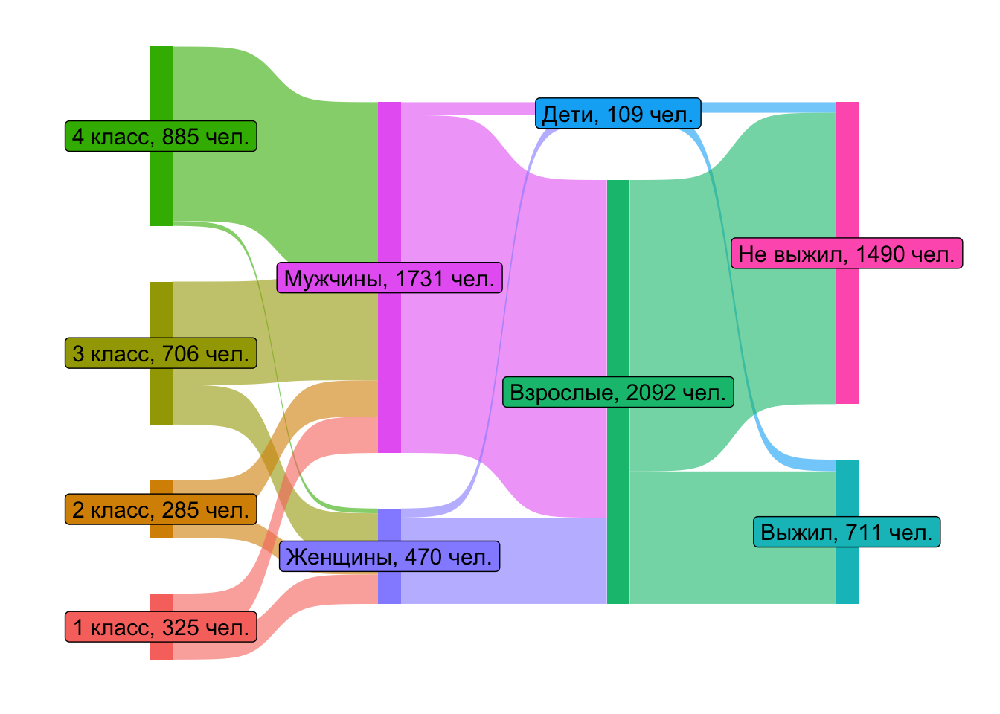
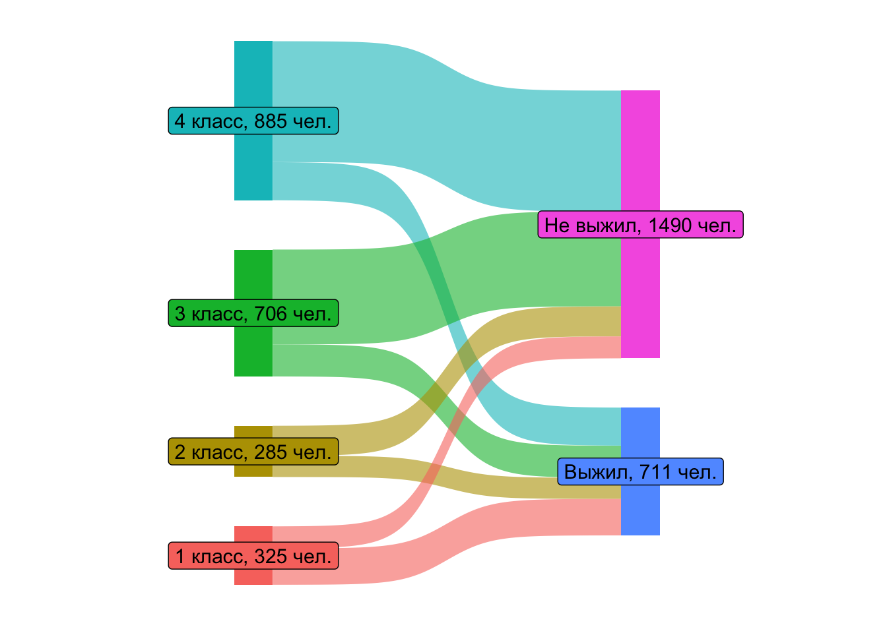
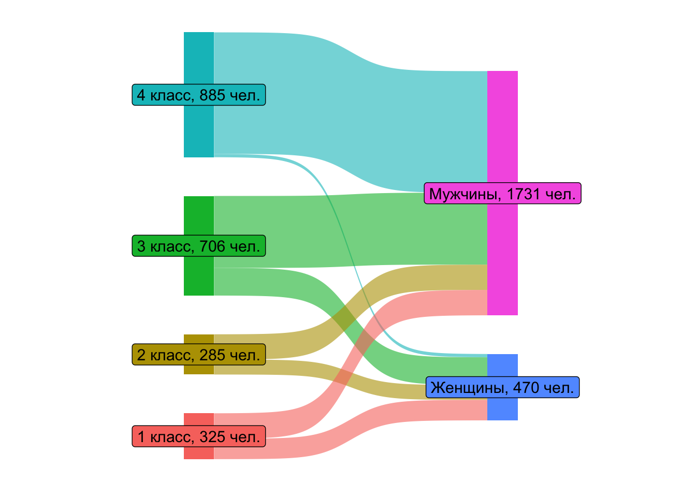
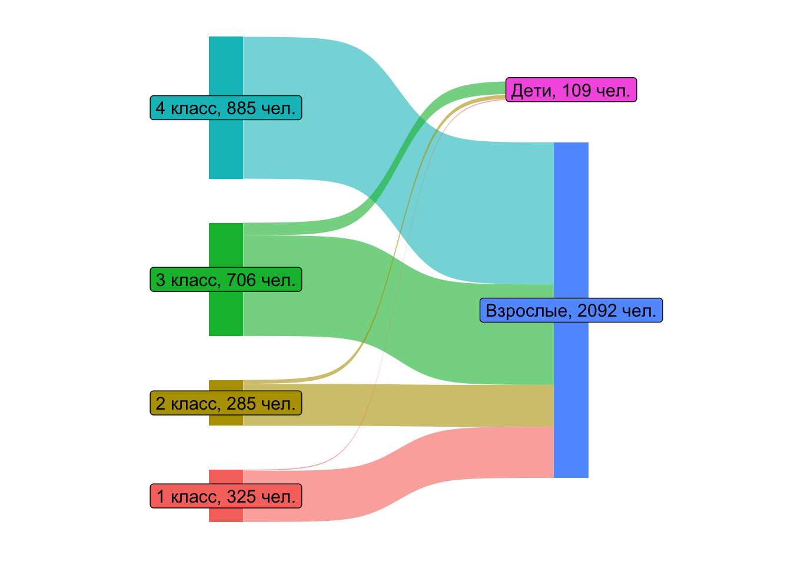
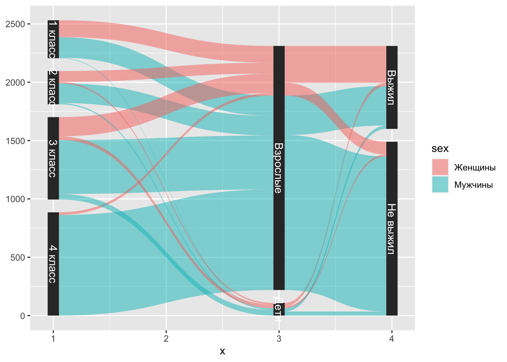

library('haven')5 Постстратификация
5.1 Про постстратификацию
in progress…
5.2 Пример про Титаник
5.2.1 Предварительный анализ
Для иллюстрации этого подхода, рассмотрим пример на одном из популярных наборов даных про Титаник. Как известно, лайнер столкнулся с айсбергом и затонул во время своего первого рейса. Из 2200 человек на борту выжило чуть более 700 пассажиров и членов экипажа.
После по имеющимся данным высказывалась гипотеза, что пассажиры, которые передвигались в каютах первого класса (самого дорогого), выживали чаще. Именно её мы и проверим.
Проблема заключается в том, что женщинам и детям отдавался приоритет при посадке в спасательные шлюпки. Если женщины и дети с большей вероятностью будут сидеть в каютах первого класса, то, возможно, различия в выживаемости в каютах первого класса и остальных каютах просто улавливают эффект этой социальной нормы.
Подключаем библиотеку для импорта данных в формате .dta (формат Stata):
Импортируем данные:
data <- read_dta('https://raw.github.com/scunning1975/mixtape/master/titanic.dta')Наш набор данных состоит из четырех переменных (каждая строчка – конкретный пассажир): - class – класс каюты, который был у пасажира (1 – самый дорогой, 4 – самый дешевый) - age – возраст пасажира (0 – дети, 1 – взрослые) - sex – пол пасажира (0 – женщины, 1 – мужчины) - survived – выжил ли пасажир после крушения лайнера (0 – не выжил, 1 – выжил)
summary(data) class age sex survived
Min. :1.000 Min. :0.0000 Min. :0.0000 Min. :0.000
1st Qu.:2.000 1st Qu.:1.0000 1st Qu.:1.0000 1st Qu.:0.000
Median :3.000 Median :1.0000 Median :1.0000 Median :0.000
Mean :2.977 Mean :0.9505 Mean :0.7865 Mean :0.323
3rd Qu.:4.000 3rd Qu.:1.0000 3rd Qu.:1.0000 3rd Qu.:1.000
Max. :4.000 Max. :1.0000 Max. :1.0000 Max. :1.000 Мы хотим проверить, действительно ли пассажиры, которые передвигались в каюте первого класса при прочих равных выживали чаще. При этом есть сведения того, что женщинам и детям отдавался приоритет при посадке в спасательные шлюпки. Для начала проверим, нет ли тенденции, что в каютах первого класса чаще также чаще находились дети и женщины. Для этого проведем предварительный анализ данных и построим sankey chart.
Сделаем копию набора данных data_sankey, чтобы использовать его для преобразований. Исходный набор данных data будем использовать для оценки эффекта:
data_sankey <- dataЧтобы подписи на нашем графике были более очевидными, перезаполним нашу таблицу более “говорящими” категорями. Функция str_replace(строка, что заменить, на что заменить) из пакета stringr в строке, которую вы ей передаете, заменяет все фрагменты на те, которые вы ей скажете.
library('stringr')Заменяем номера классов на словесное описание:
data_sankey$class <- str_replace(data_sankey$class, "1", "1 класс")
data_sankey$class <- str_replace(data_sankey$class, "2", "2 класс")
data_sankey$class <- str_replace(data_sankey$class, "3", "3 класс")
data_sankey$class <- str_replace(data_sankey$class, "4", "4 класс")Заменяем бинарную переменную пола на словесное описание:
data_sankey$sex <- str_replace(data_sankey$sex, "0", "Женщины")
data_sankey$sex <- str_replace(data_sankey$sex, "1", "Мужчины")Заменяем бинарную переменную возраста на словесное описание:
data_sankey$age <- str_replace(data_sankey$age, "0", "Дети")
data_sankey$age <- str_replace(data_sankey$age, "1", "Взрослые")Заменяем бинарную выживаемости пола на словесное описание:
data_sankey$survived <- str_replace(data_sankey$survived, "0", "Не выжил")
data_sankey$survived <- str_replace(data_sankey$survived, "1", "Выжил")Тперь наш набор данных выглядит следующим образом (каждая строчка – конкретный пассажир):
head(data_sankey)# A tibble: 6 × 4
class age sex survived
<chr> <chr> <chr> <chr>
1 1 класс Взрослые Мужчины Выжил
2 1 класс Взрослые Мужчины Выжил
3 1 класс Взрослые Мужчины Выжил
4 1 класс Взрослые Мужчины Выжил
5 1 класс Взрослые Мужчины Выжил
6 1 класс Взрослые Мужчины Выжил Для граифка нам понадобится еще две дополнительных библиотеки:
# library(devtools)
# devtools::install_github("davidsjoberg/ggsankey")
library(ggsankey)
library(ggplot2)Подробнее почитать про пакет ggsankey и ознакомиться с синтаксисом можно тут.
Наш пакет умеет понимать данные определенной структуры. Помните, когда у вас был курс методов оптимальных решений, где вы решали транспортную задачу, вам сначала нужно было по условию нарисовать граф и нанести потоки. Вот примерно такое же условие мы сейчас будем готовить для пакета.
Сначала используем функцию make_long() из пакета ggsankey, чтобы перекроить
data_sankey1 <- data_sankey %>% make_long(class, sex, age, survived)Нам понадобиться функция tally() из библиотеки dplyr:
library(dplyr)
data_sankey2 <- data_sankey1 %>% group_by(node) %>% tally()data_sankey3 <- merge(data_sankey1, data_sankey2, by.x = 'node', by.y = 'node', all.x = TRUE)sankey <- ggplot(data_sankey3, aes(x = x,
next_x = next_x,
node = node,
next_node = next_node,
fill = factor(node),
label = paste0(node,", ", n, " чел."))) +
geom_sankey(flow.alpha = 0.6) +
geom_sankey_label(size = 4) +
theme_sankey(base_size = 16) +
labs(x = NULL) +
theme(legend.position = "none") +
theme(axis.title.x=element_blank(),
axis.text.x=element_blank(),
axis.ticks.x=element_blank())А теперь посмотрим разные разбивки данных:
5.2.1.1 класс – пол – возраст – выживаемость
data_sankey1 <- data_sankey %>% make_long(class, sex, age, survived)
data_sankey2 <- data_sankey1 %>% group_by(node) %>% tally()
data_sankey3 <- merge(data_sankey1, data_sankey2, by.x = 'node', by.y = 'node', all.x = TRUE)
sankey <- ggplot(data_sankey3, aes(x = x,
next_x = next_x,
node = node,
next_node = next_node,
fill = factor(node),
label = paste0(node,", ", n, " чел."))) +
geom_sankey(flow.alpha = 0.6) +
geom_sankey_label(size = 4) +
theme_sankey(base_size = 16) +
labs(x = NULL) +
theme(legend.position = "none") +
theme(axis.title.x=element_blank(),
axis.text.x=element_blank(),
axis.ticks.x=element_blank())
sankey
5.2.1.2 класс – выживаемость
data_sankey1 <- data_sankey %>% make_long(class, survived)
data_sankey2 <- data_sankey1 %>% group_by(node) %>% tally()
data_sankey3 <- merge(data_sankey1, data_sankey2, by.x = 'node', by.y = 'node', all.x = TRUE)
sankey <- ggplot(data_sankey3, aes(x = x,
next_x = next_x,
node = node,
next_node = next_node,
fill = factor(node),
label = paste0(node,", ", n, " чел."))) +
geom_sankey(flow.alpha = 0.6) +
geom_sankey_label(size = 4) +
theme_sankey(base_size = 16) +
labs(x = NULL) +
theme(legend.position = "none") +
theme(axis.title.x=element_blank(),
axis.text.x=element_blank(),
axis.ticks.x=element_blank())
sankey
5.2.1.3 класс – пол
data_sankey1 <- data_sankey %>% make_long(class, sex)
data_sankey2 <- data_sankey1 %>% group_by(node) %>% tally()
data_sankey3 <- merge(data_sankey1, data_sankey2, by.x = 'node', by.y = 'node', all.x = TRUE)
sankey <- ggplot(data_sankey3, aes(x = x,
next_x = next_x,
node = node,
next_node = next_node,
fill = factor(node),
label = paste0(node,", ", n, " чел."))) +
geom_sankey(flow.alpha = 0.6) +
geom_sankey_label(size = 4) +
theme_sankey(base_size = 16) +
labs(x = NULL) +
theme(legend.position = "none") +
theme(axis.title.x=element_blank(),
axis.text.x=element_blank(),
axis.ticks.x=element_blank())
sankey
5.2.1.4 класс – возраст
data_sankey1 <- data_sankey %>% make_long(class, age)
data_sankey2 <- data_sankey1 %>% group_by(node) %>% tally()
data_sankey3 <- merge(data_sankey1, data_sankey2, by.x = 'node', by.y = 'node', all.x = TRUE)
sankey <- ggplot(data_sankey3, aes(x = x,
next_x = next_x,
node = node,
next_node = next_node,
fill = factor(node),
label = paste0(node,", ", n, " чел."))) +
geom_sankey(flow.alpha = 0.6) +
geom_sankey_label(size = 4) +
theme_sankey(base_size = 16) +
labs(x = NULL) +
theme(legend.position = "none") +
theme(axis.title.x=element_blank(),
axis.text.x=element_blank(),
axis.ticks.x=element_blank())
sankey
5.2.2 Альтернативные пакеты для sankey chart по запросу трудящихся (факультативный раздел)
5.2.2.1 ggforce
## делаем факторные переменные для ggplot
data_sankey$class <- as.factor(data_sankey$class)
data_sankey$age <- as.factor(data_sankey$age)
data_sankey$sex <- as.factor(data_sankey$sex)
data_sankey$survived <- as.factor(data_sankey$survived)
## считаем количество наблюдений по группам
library('dplyr')
data_sankey <- data_sankey %>% group_by(class, sex, age, survived) %>% summarise(value=n())
## преобразовываем данные в адресный вид
library('ggforce')
library('ggplot2')
data_sankey <- gather_set_data(data_sankey, c(1,3,4))
## sankey chart
sankey <- ggplot(data_sankey, aes(x, id = id, split = y, value = value)) +
geom_parallel_sets(aes(fill = sex),
alpha = 0.5, # яркость
axis.width = 0.1) + # отступы от бортиков
geom_parallel_sets_axes(axis.width = 0.1) + # толщина бортиков
geom_parallel_sets_labels(colour = 'white') # цвет подписей на бортиках
sankey
5.2.3 Считаем эффект
in progress…
Наивная оценка
ATE_naive[1] 0.3538265Постстратификация
data <- data %>%
mutate(str = case_when(sex == 0 & age == 1 ~ 1, # женщины
sex == 0 & age == 0 ~ 2, # девочки
sex == 1 & age == 1 ~ 3, # мужчины
sex == 1 & age == 0 ~ 4, # мальчики
TRUE ~ 0))conditional_treatment_data <- data %>% group_by(str, d) %>% summarise(ct = mean(survived),
w = n()/nrow(data))`summarise()` has grouped output by 'str'. You can override using the `.groups`
argument.conditional_treatment_data <- conditional_treatment_data %>% group_by(str) %>% mutate(W = w + lag(w),
W_t = lead(w),
W_c = lag(w),
diff=ct-lag(ct))ATE <- sum(na.omit(conditional_treatment_data$W*conditional_treatment_data$diff))
ATT <- sum(na.omit(conditional_treatment_data$W_t)*na.omit(conditional_treatment_data$diff))
ATnT <- sum(na.omit(conditional_treatment_data$W_c)*na.omit(conditional_treatment_data$diff))ATE[1] 0.1959843ATT[1] 0.0350755ATnT[1] 0.1609087